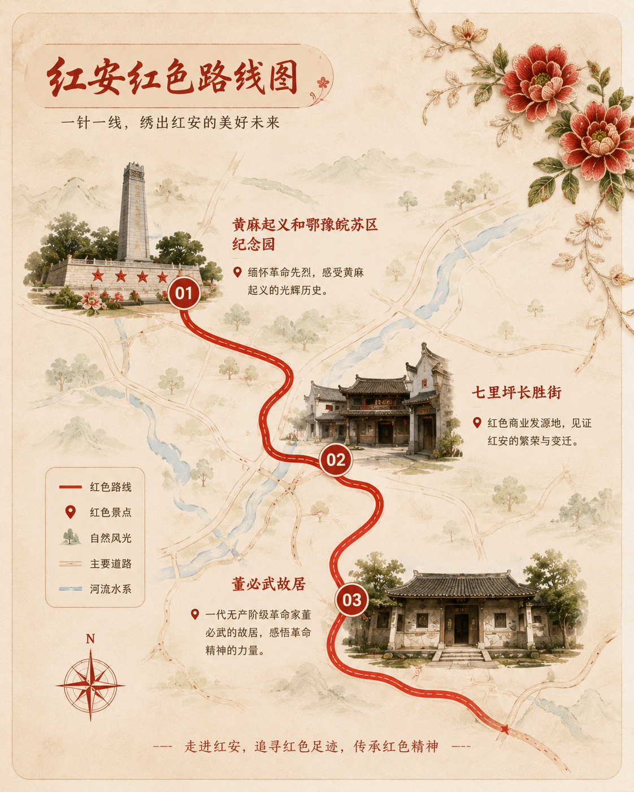
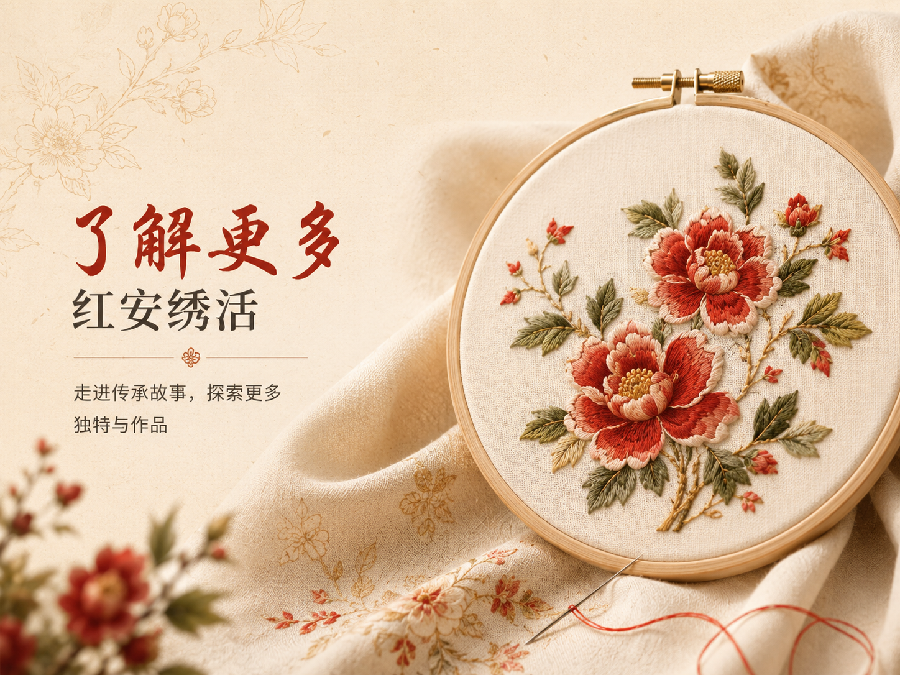
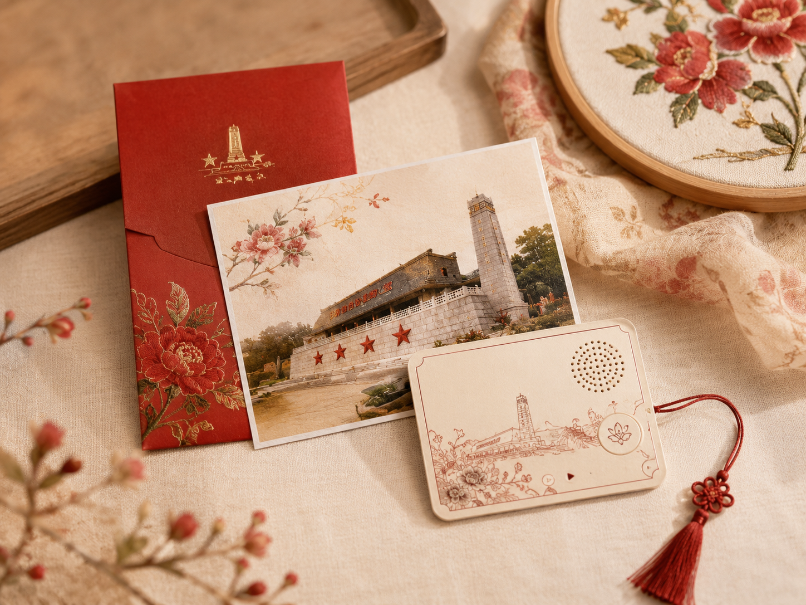
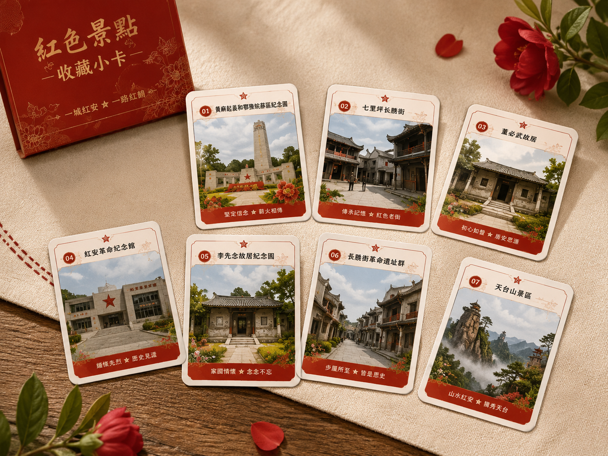
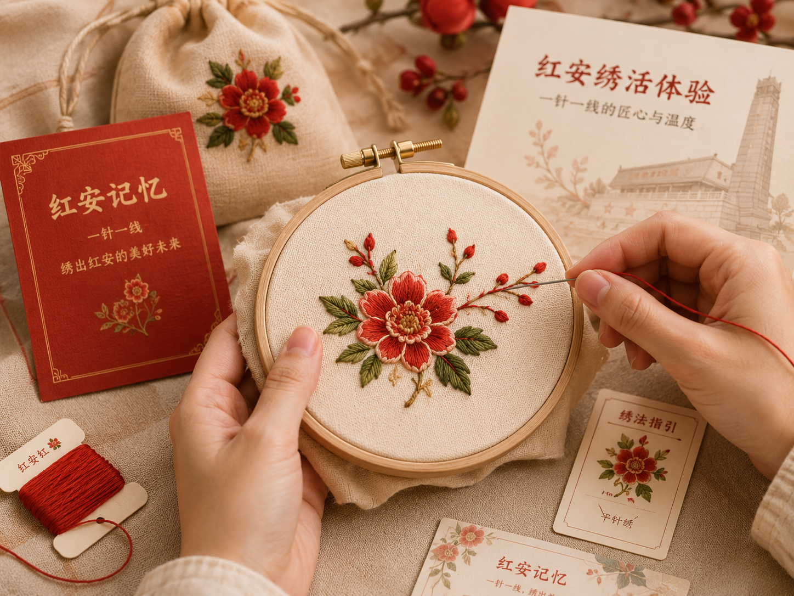
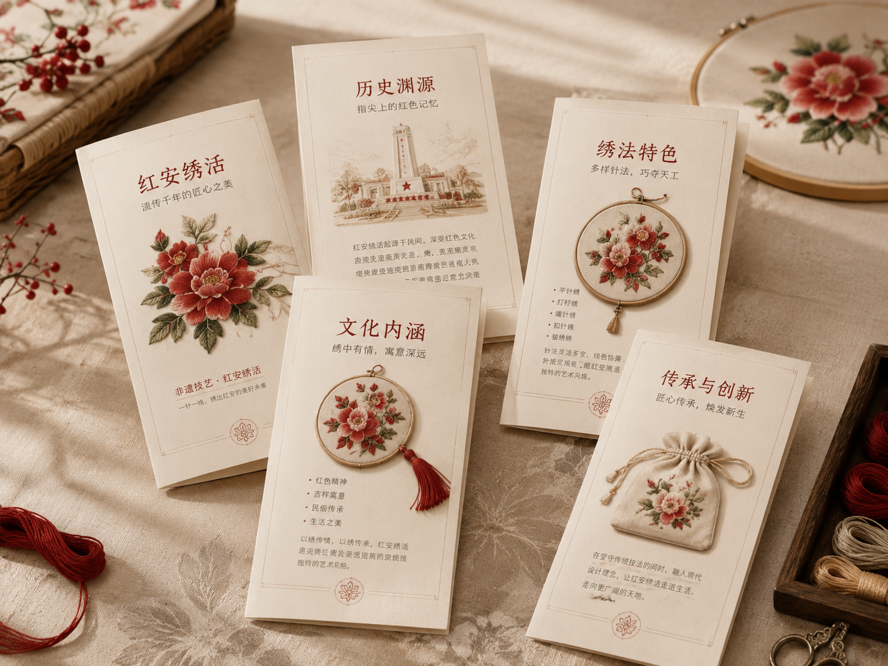

01黄麻起义和鄂豫皖苏区纪念园
了解红安红色历史的重要窗口，感受革命先辈的坚定信仰。
Red Memory Route
走进红安，追寻红色足迹，感受信仰的力量

01了解红安红色历史的重要窗口，感受革命先辈的坚定信仰。

02红色街巷与老生活在此交织，寻找红安绣活的传承印记。

03从家风与初心中，理解一针一线背后的情感力量。
Intangible Heritage
一门古老而温暖的技艺，承载红安的生活与情感

Route & Heritage
红色景点不只是历史记忆的入口，也能成为理解地方生活的窗口。 在纪念园、老街与故居之间，寻找纹样、布料、家风与手作记忆的联系。
Cultural Experience
精心设计的文创小物，记录你的红安之旅

扫码聆听红色故事，背面可书写你的旅途感想。

收藏红安经典景观，记录你的红安足迹。
动手穿针，引线一针一线，感受非遗的乐趣。
图文介绍红安绣活的纹样、技艺与文化内涵。
更多红安绣活文创正在设计中，敬请期待。
About
“绣见红安”以红色景点导览为线索，将红安红色文化、地方非遗绣活与游客互动体验串联起来。 页面面向游客和文化宣传场景，希望让更多人在一次浏览、一段路线、一枚小卡中，看见红安的历史厚度与手作温度。